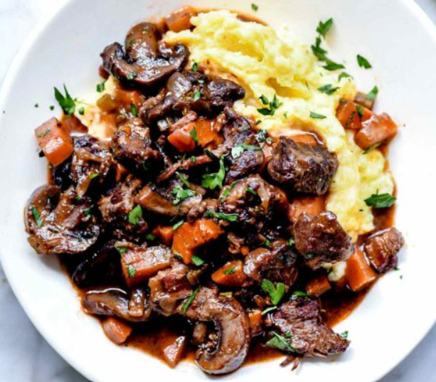

Beef Bourguignon

Description
Classic French beef stew for cold days! Haven't made it before but looks awesome.
Ingredients
- Beef Chuck
- Flour
- Bacon
- Onion
- Carrots
- Celery
- Mushroom
- Garlic
- Cognac
- Tomato Paste
- Dry Red Wine
- Beef Stock
- Brown Sugar
- Thyme Leaves
Steps
- Preheat oven to 350 deg
- Cut beef into chunks and season with salt and pepper then flour and set aside
- Slice bacon into small pieces, brown until crispy in a dutch oven and set aside
- Add beef to bacon fat and brown on all sides. Remove and set aside
- Add onions, carrots, celery and mushrooms to pot. Cook until softened. Add garlic and cook until aromatic. Remove vegetables and put in the beef bowl
- Deglaze pan with cognac and reduce by half
- Stir in tomato paste and then add wine, stock, thyme, brown sugar and salt & pepper
- Return bacon, beef and vegetables to the pot, cover and place in oven
- Cook for 2 hours in preheated oven until beef is fork-tender
- Serve garnished with parsley over mashed potatoes